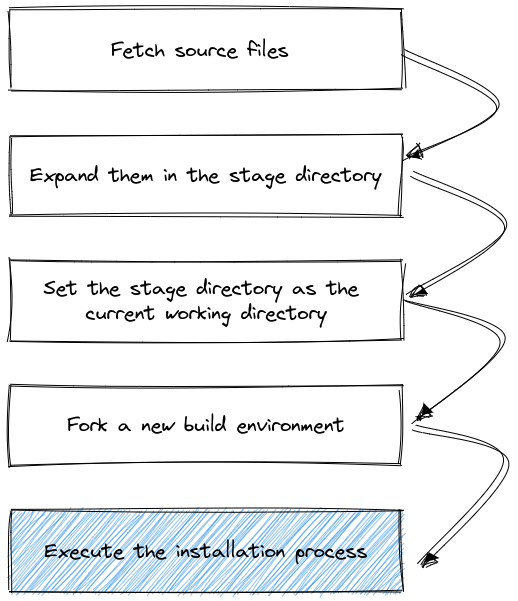
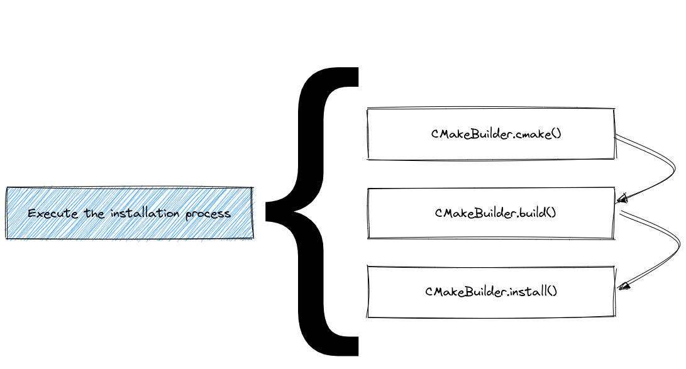
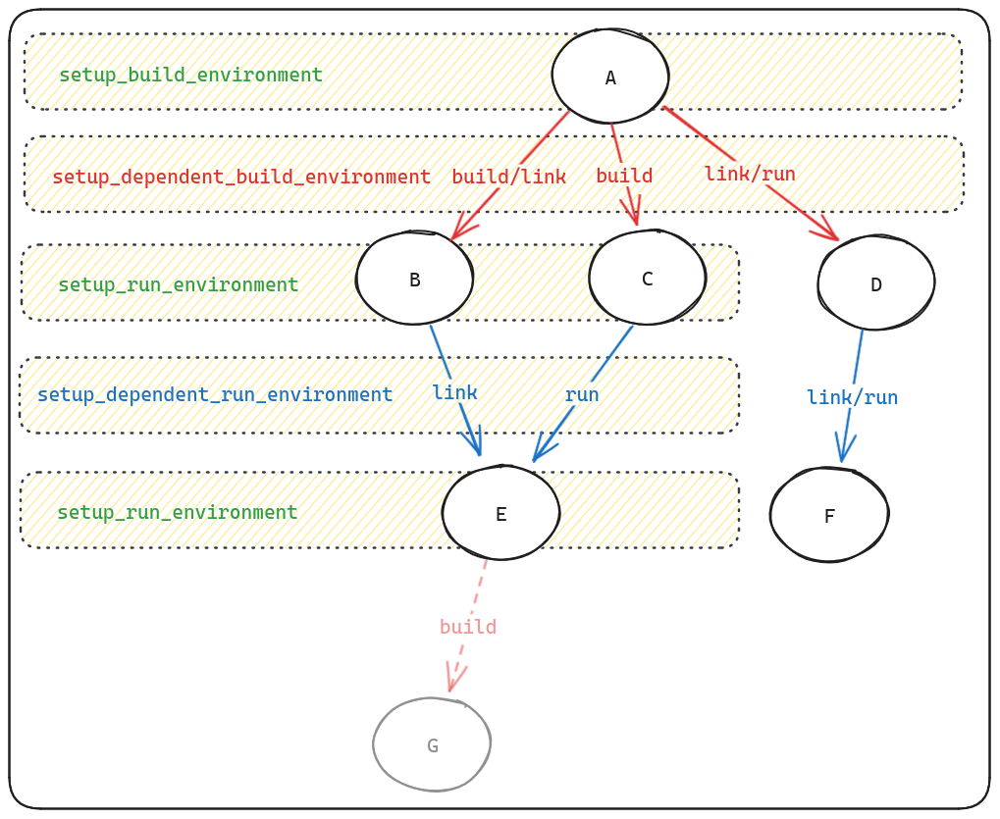

2. Build |
Packaging Guide: customizing the build¶
In the first part of the packaging guide, we covered the basic structure of a package, how to specify dependencies, and how to define variants. In the second part, we will cover the installation procedure, build systems, and how to customize the build process.
Overview of the installation procedure¶
Whenever Spack installs software, it goes through a series of predefined steps:
{kind=link}

All these steps are influenced by the metadata in each package.py and by the current Spack configuration.
Since build systems are different from one another, the execution of the last block in the figure is further expanded in a build system specific way.
An example for CMake is, for instance:
{kind=link}

The predefined steps for each build system are called "phases".
In general, the name and order in which the phases will be executed can be obtained by either reading the API docs at build_systems, or using the spack info command:
$ spack info --phases m4
AutotoolsPackage: m4
Homepage: https://www.gnu.org/software/m4/m4.html
Safe versions:
1.4.17 ftp://ftp.gnu.org/gnu/m4/m4-1.4.17.tar.gz
Variants:
Name Default Description
sigsegv on Build the libsigsegv dependency
Installation Phases:
autoreconf configure build install
Build Dependencies:
libsigsegv
...
An extensive list of available build systems and phases is provided in What are build systems?.
Controlling the build process¶
As we have seen in the first part of the packaging guide, the usual workflow for creating a package is to start with spack create <url>, which generates a package.py file for you with a boilerplate package class.
This typically includes a package base class (e.g. AutotoolsPackage or CMakePackage), a URL, and one or more versions.
After you have added required dependencies and variants, you can start customizing the build process.
There are various ways to do this, depending on the build system and the package itself.
From simplest to most complex, the following are the most common ways to customize the build process:
Implementing build system helper methods and properties. Most build systems provide a set of helper methods that can be overridden to customize the build process without overriding entire phases. For example, for
AutotoolsPackageyou can specify the command line arguments for./configureby implementingconfigure_args:class MyPkg(AutotoolsPackage): def configure_args(self): # FIXME: Add arguments other than --prefix # FIXME: If not needed delete this function args = [] return args
Similarly for
CMakePackageyou can influence howcmakeis invoked by implementingcmake_args:class MyPkg(CMakePackage): def cmake_args(self): # FIXME: Add arguments other than # FIXME: CMAKE_INSTALL_PREFIX and CMAKE_BUILD_TYPE # FIXME: If not needed delete this function args = [] return args
The exact methods and properties available depend on the build system you are using. See Build Systems for a complete list of available build systems and their specific helper functions and properties.
Setting environment variables. Some build systems require specific environment variables to be set before the build starts. You can set these variables by overriding the
setup_build_environmentmethod in your package class:def setup_build_environment(self, env): env.set("MY_ENV_VAR", "value")
This is useful for setting paths or other variables that the build system needs to find dependencies or configure itself correctly.
Complementing the build system with pre- or post-build steps. In some cases, you may need to run additional commands before or after the build system phases. This is useful for installing additional files missed by the build system, or for running custom scripts.
@run_after("install") def install_missing_files(self): install_tree("extra_files", self.prefix.bin)
Overriding entire build phases. If the default implementation of a build phase does not fit your needs, you can override the entire phase. See Overriding a build phase for examples.
In any of the functions above, you can
Make instructions dynamic. Build instructions typically depend on the package's variants, version and its dependencies. For example, you can use
if self.spec.satisfies("+variant_name"): ...
to check if a variant is enabled, or
self.spec["dependency_name"].prefix
to get the prefix of a dependency. See Configuring the build with spec objects for more details on how to use specs in your package.
Use Spack's Python Package API. The
from spack.package import *statement at the top of apackage.pyfile allows you to access Spack's utilities and helper functions, such aswhich,install_tree,filter_fileand others. See Spack's Python Package API for more details.
What are build systems?¶
Every package in Spack has an associated build system.
For most packages, this will be a well-known system for which Spack provides a base class, like CMakePackage or AutotoolsPackage.
Even for packages that have no formal build process (e.g., just copying files), Spack still associates them with a generic build system class.
Build systems have the following responsibilities:
Define and implement the build phases. Each build system defines a set of phases that are executed in a specific order. For example,
AutotoolsPackagehas the following phases:autoreconf,configure,build, andinstall. These phases are Python methods with a sensible default implementation that can be overridden by the package author.Add dependencies and variants. Build systems can define dependencies and variants that are specific to the build system. For example,
CMakePackageadds acmakeas a build dependency, and definesbuild_typeas a variant (which maps to theCMAKE_BUILD_TYPECMake variable). All build systems also define a special variantbuild_system, which is useful in case of multiple build systems.Provide helper methods. Build systems often provide helper functions and properties that the package author can use to customize the build configuration, without having to override entire phases. For example:
The
CMakePackagelets users implement thecmake_argsmethod to specify additional arguments for thecmakecommandThe
MakefilePackagelets users setbuild_targetsandinstall_targetsproperties to specify the targets to build and install.
There are typically also helper functions to map variants to CMake or Autotools options:
The
CMakePackageprovides theself.define_from_variant("VAR_NAME", "variant_name")method to generate the appropriate-DVAR_NAME:BOOL=ON/OFFarguments for thecmakecommand.The
AutotoolsPackageprovides helper functions likeself.with_or_without("foo")to generate the appropriate--with-fooor--without-fooarguments for the./configurescript.
Here is a table of the most common build systems available in Spack:
Package Class |
Description |
|---|---|
For packages that use GNU Autotools (autoconf, automake, libtool). |
|
For packages that use CMake. |
|
For packages that use plain Makefiles. |
|
For packages that use the Meson build system. |
|
For Python packages (setuptools, pip, etc.). |
|
For installing a collection of other packages. |
|
Generic package for custom builds, provides only an |
All build systems are defined in the spack_repo.builtin.build_systems module, which is part of the Spack builtin package repository.
To use a particular build system, you need to import it in your package.py file, and then derive your package class from the appropriate base class:
from spack_repo.builtin.build_systems.cmake import CMakePackage
class MyPkg(CMakePackage):
pass
For a complete list of build systems and their specific helper functions and properties, see the Build Systems documentation.
Configuring the build with spec objects¶
Configuring a build is typically the first step in the build process.
In many build systems it involves passing the right command line arguments to the configure script, and in some build systems it is a matter of setting the right environment variables.
In this section we will use an Autotools package as an example, where we just need to implement the configure_args helper function.
In general, whenever you implement helper functions of a build system or complement or override its build phases, you often need to make decisions based on the package's configuration.
Spack is unique in that it allows you to write a single package.py for all configurations of a package.
The central object in Spack that encodes the package's configuration is the concrete spec, which is available as self.spec in the package class.
This is the object you need to query to make decisions about how to configure the build.
Querying self.spec¶
Variants. In the previous section of the packaging guide, we've seen how to define variants. As a packager, you are responsible for implementing the logic that translates the selected variant values into build instructions the build system can understand. If you want to pass a flag to the configure script only if the package is built with a specific variant, you can do so like this:
variant("foo", default=False, description="Enable foo feature")
def configure_args(self):
args = []
if self.spec.satisfies("+foo"):
args.append("--enable-foo")
else:
args.append("--disable-foo")
return args
For multi-valued variants, you can use the key=value syntax to test whether a specific value is selected:
variant("threads", default="none", values=("pthreads", "openmp", "none"), multi=False, ...)
def configure_args(self):
args = []
if self.spec.satisfies("threads=pthreads"):
args.append("--enable-threads=pthreads")
elif self.spec.satisfies("threads=openmp"):
args.append("--enable-threads=openmp")
elif self.spec.satisfies("threads=none"):
args.append("--disable-threads")
return args
Even if multiple values are selected, you can still use key=value to test for specific values:
variant("languages", default="c,c++", values=("c", "c++", "fortran"), multi=True, ...)
def configure_args(self):
args = []
if self.spec.satisfies("languages=c"):
args.append("--enable-c")
if self.spec.satisfies("languages=c++"):
args.append("--enable-c++")
if self.spec.satisfies("languages=fortran"):
args.append("--enable-fortran")
return args
Notice that many build systems provide helper functions to make the above code more concise. See the Autotools docs and the CMake docs.
Other than testing for certain variant values, you can also obtain the variant value directly with self.spec.variants["variant_name"].value.
This is useful when you want to pass the variant value as a command line argument to the build system.
The type of this value depends on the variant type:
For single-valued variants this is a
strvalue.For multi-valued variants it is a tuple of
strvalues.
An example of using this is shown below:
variant(
"cxxstd",
default="11",
values=("11", "14", "17", "20", "23"),
multi=False,
description="C++ standard",
)
def configure_args(self):
return [f"--with-cxxstd={self.spec.variants['cxxstd'].value}"]
Versions. Similarly, versions are often used to dynamically change the build configuration:
def configure_args(self):
args = []
if self.spec.satisfies("@1.2:"):
args.append("--enable-new-feature")
return args
This adds a flag only if the package is on version 1.2 or higher.
Dependencies.
You can also use the self.spec.satisfies method to test whether a dependency is present or not, and whether it is built with a specific variant or version.
The ^ character is used to refer to packages that are required at runtime as well as build dependencies.
More precisely, it includes all direct dependencies of build type and transitive dependencies of link or run type.
if self.spec.satisfies("^python@3.8:"):
args.append("--min-python-version=3.8")
Here we test whether the package has a (possibly transitive) dependency on Python version 3.8 or higher.
The % character is used to refer to direct dependencies only.
A typical use case is when you want to test the compiler used to build the package.
if self.spec.satisfies("%c=gcc@8:"):
args.append("--enable-profile-guided-optimization")
This example adds a flag when the C compiler is from GCC version 8 or higher.
The %c=gcc syntax technically means that gcc is the provider for the c language virtual.
小技巧
Historically, many packages have been written using ^dep to refer to a dependency.
Modern Spack packages should consider using %dep instead, which is more precise: it can only match direct dependencies, which are listed in the depends_on statements.
Target specific configuration.
Spack always makes the special platform, os and target variants available in the spec.
These variants can be used to test the target platform, operating system and CPU microarchitecture the package.
The following example shows how we can add a configure option only if the package is built for Apple Silicon:
if self.spec.satisfies("platform=darwin target=aarch64:"):
args.append("--enable-apple-silicon")
Notice that target=aarch64: is a range which matches the whole family of aarch64 microarchitectures, including m1, m2, and so on.
You can use ranges starting at a specific microarchitecture as well, for example:
if self.spec.satisfies("target=haswell:"):
args.append("--enable-haswell")
备注
The spec object encodes the target platform, os and architecture the package is being built for.
This is different from the host platform (typically accessed via sys.platform) which is the platform where Spack is running.
When writing package recipes, you should always use the spec object to query the target platform, os and architecture.
To see what targets are available in your Spack installation, you can use the following command:
$ spack arch --known-targets
Generic architectures (families)
aarch64 armv8.1a armv8.3a armv8.5a armv9.0a ppc64 ppcle sparc x86 x86_64_v2 x86_64_v4
arm armv8.2a armv8.4a armv8.6a ppc ppc64le riscv64 sparc64 x86_64 x86_64_v3
GenuineIntel - x86
i686 pentium2 pentium3 pentium4 prescott
GenuineIntel - x86_64
nocona nehalem sandybridge haswell skylake cannonlake cascadelake sapphirerapids
core2 westmere ivybridge broadwell mic_knl skylake_avx512 icelake
AuthenticAMD - x86_64
k10 bulldozer piledriver zen steamroller zen2 zen3 excavator zen4 zen5
IBM - ppc64
power7 power8 power9 power10
IBM - ppc64le
power8le power9le power10le
Cavium - aarch64
thunderx2
Fujitsu - aarch64
a64fx
ARM - aarch64
cortex_a72 neoverse_n1 neoverse_v1 neoverse_v2 neoverse_n2
Apple - aarch64
m1 m2 m3 m4
SiFive - riscv64
u74mc
Referring to a dependency's prefix, libraries, and headers¶
Very often you need to inform the build system about the location of a dependency. The most common way to do this is to pass the dependency's prefix as a configure argument and let the build system detect the libraries and headers from there.
To do this, you can obtain the dependency's spec by name:
libxml2 = self.spec["libxml2"]
The libxml2 variable is itself a spec object, and we can refer to its properties:
def configure_args(self):
return [
f"--with-libxml2={self.spec['libxml2'].prefix}",
]
Apart from the prefix, you can also access other attributes of the dependency, such as libs or headers.
See home, command, headers, and libs for how dependencies define these attributes.
These attributes are typically only required if the package is unable to locate the libraries and headers itself, or if you want to be more specific about which libraries or headers to use.
A more advanced example where we explicitly pass libraries and headers to the configure script is shown below.
def configure_args(self):
return [
f"--with-libxml2={self.spec['libxml2'].prefix}",
f"--with-libxml2-libs={self.spec['libxml2'].libs.ld_flags}",
f"--with-libxml2-include={self.spec['libxml2'].headers.include_flags}",
]
The libs attribute is a LibraryList object that can be used to get a list of libraries by path, but also to get the appropriate linker flags.
Similarly, the headers attribute is a HeaderList, which also has methods to get the relevant include flags.
Virtual dependencies.
You can also refer to the prefix, libraries and headers of virtual dependencies.
For example, suppose we have a package that depends on blas and lapack.
We can get the provider's (e.g. OpenBLAS or Intel MKL) prefixes like this:
class MyPkg(AutotoolPackage):
depends_on("blas")
depends_on("lapack")
def configure_args(self):
return [
f"--with-blas={self.spec['blas'].prefix}",
f"--with-lapack={self.spec['lapack'].prefix}",
]
Many build systems struggle to locate the blas and lapack libraries during configure, either because they do not know the exact names of the libraries, or because the libraries are not in typical locations --- they may not even know whether blas and lapack are a single or separate libraries.
In those cases, the build system could use some help, for which we give a few examples below:
Space separated list of full paths
lapack_blas = spec["lapack"].libs + spec["blas"].libs args.append(f"--with-blas-lapack-lib={lapack_blas.joined()}")
Names of libraries and directories which contain them
lapack_blas = spec["lapack"].libs + spec["blas"].libs args.extend( [ f"-DMATH_LIBRARY_NAMES={';'.join(lapack_blas.names)}", f"-DMATH_LIBRARY_DIRS={';'.join(lapack_blas.directories)}", ] )
Search and link flags
lapack_blas = spec["lapack"].libs + spec["blas"].libs args.append(f"-DMATH_LIBS={lapack_blas.ld_flags}")
Before and after build phases¶
Typically the default implementation of the build system's phases is sufficient for most packages.
However, in some cases you may need to complement the default implementation with some custom instructions.
For example, some packages do not install all the files they should, and you want to fix this by simply copying the missing files after the normal install phase is done.
Instead of overriding the entire phase, you can use @run_before and @run_after to run custom code before or after a specific phase:
class MyPackage(CMakePackage):
...
variant("extras", default=False, description="Install extra files")
@run_before("cmake")
def run_before_cmake_is_invoked(self) -> None:
with open("custom_file.txt", "w") as f:
f.write("This file is created before cmake is invoked.")
@run_after("install", when="+extras")
def custom_post_install_phase(self) -> None:
# install missing files not covered by the build system
install_tree("extras", self.prefix.share.extras)
Then when="+extras" will ensure that the custom post-install phase is only run conditionally.
The function body should contain the actual instructions you want to run before or after the build phase, which can involve running executables and creating or copying files to the prefix directory using convenience functions from Spack's Python Package API.
Overriding a build phase¶
If a build phase does not do what you need, and you cannot achieve your goal either by implementing the helper methods of the build system, or by using the @run_before or @run_after decorators (see Before and after build phases), you can override the entire build phase.
The most common scenario is when a package simply does not have a well-defined build system.
For example, the installation procedure may just be copying files or running a shell script.
In that case, you can use the generic Package class, which defines only a single install() phase, to be overridden by the package author:
from spack.package import *
from spack_repo.builtin.build_systems.generic import Package
class MyPkg(Package):
# Override the install phase
def install(self, spec: Spec, prefix: Prefix) -> None:
install_tree("my_files", prefix.bin)
Whichever build system is used, every build phase function has the same set of arguments. The arguments are:
selfThis is the package object, which extends
CMakePackage. For API docs on Package objects, seePackage.specThis is the concrete spec object created by Spack from an abstract spec supplied by the user. It describes what should be installed. It will be of type
Spec.prefixThis is where your package should install its files. It acts like a string, but it's actually its own special type.
The function body should contain the actual build instructions, which typically involves:
Invoking the build system's commands such as
make,ninja,python, et cetera. See Running build executables for how to do this.Copying files to the
prefixdirectory, which is where Spack expects the package to be installed. This can be done using Spack's built-in functions likeinstall_tree()orinstall(). See the Spack's Python Package API for all convenience functions that can be used in the package class.
The arguments spec and prefix are passed only for convenience, as they always correspond to self.spec and self.spec.prefix respectively, as we have already seen in the previous section.
警告
When working with multiple build systems in a single package, the arguments for build phase functions are slightly different.
Running build executables¶
When you override a build phase, or when you write a build phase hook, you typically need to invoke executables like make, cmake, or python to kick off the build process.
Spack makes some of these executables available as global functions, making it easy to run them in your package class:
from spack.package import *
from spack_repo.builtin.build_systems.generic import Package
class MyPkg(Package):
depends_on("make", type="build")
depends_on("python", type="build")
def install(self, spec: Spec, prefix: Prefix) -> None:
python("generate-makefile.py", "--output=Makefile")
make()
make("install")
The python() and make() functions in this example invoke the python3 and make executables, respectively.
Naturally, you may wonder where these variables come from, since they are not imported from anywhere --- your editor may even underline them in red because they are not defined in the package module.
The answer lies in the python and make dependencies, which implement the setup_dependent_package() method in their package classes.
This sets up Python variables that can be used in the package class of dependents.
There is a good reason that it's the dependency that sets up these variables, rather than the package itself.
For example, the make package ensures sensible default arguments for the make executable, such as the -j flag to enable parallel builds.
This means that you do not have to worry about these technical details in your package class; you can just use make("my_target") and Spack will take care of the rest.
See the section about parallel builds for more details.
Not all dependencies set up such variables for dependent packages, in which case you have two further options:
Use the
commandattribute of the dependency. This is a good option, since it refers to an executable provided by a specific dependency.def install(self, spec: Spec, prefix: Prefix) -> None: cython = self.spec["py-cython"].command cython("setup.py", "build_ext", "--inplace")
Use the
whichfunction (from thespack.packagemodule). Do note that this function relies on the order of thePATHenvironment variable, which may be less reliable than the first option.def install(self, spec: Spec, prefix: Prefix) -> None: cython = which("cython", required=True) cython("setup.py", "build_ext", "--inplace")
All executables in Spack are instances of Executable, see its API docs for more details.
Package-level parallelism¶
Many build tools support parallel builds, including make and ninja, as well as certain Python build tools.
As mentioned in the previous section, the gmake and ninja packages make their executables available as global functions, which you can use in your package class.
They automatically add the -j <njobs> when invoked, where <njobs> is a sensible default for the number of jobs to run in parallel.
This exact number is determined depends on various factors, such as the spack install command line arguments, configuration options and available CPUs on the system.
As a packager, you rarely need to pass the -j flag when calling make() or ninja(); it is better to rely on the defaults.
In certain cases however, you may need to override the default number of jobs for a specific package.
If a package does not build properly in parallel, you can simply define parallel = False in your package class.
For example:
class ExamplePackage(MakefilePackage):
"""Example package that does not build in parallel."""
parallel = False
This ensures that any make or ninja invocation will not set the -j <njobs> option, and the build will run sequentially.
You can also disable parallel builds only for specific make invocation:
class Libelf(MakefilePackage):
...
def install(self, spec: Spec, prefix: Prefix) -> None:
make("install", parallel=False)
In this case, the build phase will still execute in parallel, but the install phase will run sequentially.
For packages whose build systems do not run make or ninja, but have other executables or scripts that support parallel builds, you can control parallelism using the make_jobs global.
This global variable is an integer that specifies the number of jobs to run in parallel during the build process.
class Xios(Package):
def install(self, spec: Spec, prefix: Prefix) -> None:
make_xios = Executable("./make_xios")
make_xios(
"--with-feature",
f"--jobs={make_jobs}",
)
Spack's Python Package API¶
Whenever you implement overriding phases or before and after build phases, you typically need to modify files, work with paths and run executables. Spack provides a number of convenience functions and classes of its own to make your life even easier, complementing the Python standard library.
All of the functionality in this section is made available by importing the spack.package module.
from spack.package import *
This is already part of the boilerplate for packages created with spack create.
File filtering functions¶
filter_file(regex, repl, *filenames, **kwargs)Works like
sedbut with Python regular expression syntax. Takes a regular expression, a replacement, and a set of files.replcan be a raw string or a callable function. If it is a raw string, it can contain\1,\2, etc. to refer to capture groups in the regular expression. If it is a callable, it is passed the PythonMatchObjectand should return a suitable replacement string for the particular match.Examples:
Filtering a Makefile to force it to use Spack's compiler wrappers:
filter_file(r"^\s*CC\s*=.*", "CC = " + spack_cc, "Makefile") filter_file(r"^\s*CXX\s*=.*", "CXX = " + spack_cxx, "Makefile") filter_file(r"^\s*F77\s*=.*", "F77 = " + spack_f77, "Makefile") filter_file(r"^\s*FC\s*=.*", "FC = " + spack_fc, "Makefile")
Replacing
#!/usr/bin/perlwith#!/usr/bin/env perlinbib2xhtml:filter_file(r"#!/usr/bin/perl", "#!/usr/bin/env perl", prefix.bin.bib2xhtml)
Switching the compilers used by
mpich's MPI wrapper scripts fromcc, etc. to the compilers used by the Spack build:filter_file("CC='cc'", "CC='%s'" % self.compiler.cc, prefix.bin.mpicc) filter_file("CXX='c++'", "CXX='%s'" % self.compiler.cxx, prefix.bin.mpicxx)
change_sed_delimiter(old_delim, new_delim, *filenames)Some packages, like TAU, have a build system that can't install into directories with, e.g. "@" in the name, because they use hard-coded
sedcommands in their build.change_sed_delimiterfinds allsedsearch/replace commands and changes the delimiter. E.g., if the file contains commands that look likes///, you can use this to change them tos@@@.Example of changing
s///tos@@@in TAU:change_sed_delimiter("@", ";", "configure") change_sed_delimiter("@", ";", "utils/FixMakefile") change_sed_delimiter("@", ";", "utils/FixMakefile.sed.default")
File functions¶
ancestor(dir, n=1)Get the nth ancestor of the directory
dir.can_access(path)True if we can read and write to the file at
path. Same as native Pythonos.access(file_name, os.R_OK|os.W_OK).install(src, dest)Install a file to a particular location. For example, install a header into the
includedirectory under the installprefix:install("my-header.h", prefix.include)
join_path(*paths)An alias for
os.path.join. This joins paths using the OS path separator.mkdirp(*paths)Create each of the directories in
paths, creating any parent directories if they do not exist.working_dir(dirname, kwargs)This is a Python Context Manager that makes it easier to work with subdirectories in builds. You use this with the Python
withstatement to change into a working directory, and when the with block is done, you change back to the original directory. Think of it as a safepushd/popdcombination, wherepopdis guaranteed to be called at the end, even if exceptions are thrown.Example usage:
The
libdwarfbuild first runsconfigureandmakein a subdirectory calledlibdwarf. It then implements the installation code itself. This is natural withworking_dir:with working_dir("libdwarf"): configure("--prefix=" + prefix, "--enable-shared") make() install("libdwarf.a", prefix.lib)
Many CMake builds require that you build "out of source", that is, in a subdirectory. You can handle creating and
cd'ing to the subdirectory like the LLVM package does:with working_dir("spack-build", create=True): cmake( "..", "-DLLVM_REQUIRES_RTTI=1", "-DPYTHON_EXECUTABLE=/usr/bin/python", "-DPYTHON_INCLUDE_DIR=/usr/include/python2.6", "-DPYTHON_LIBRARY=/usr/lib64/libpython2.6.so", *std_cmake_args ) make() make("install")
The
create=Truekeyword argument causes the command to create the directory if it does not exist.
touch(path)Create an empty file at
path.
Multimethods and the @when decorator¶
The @when annotation lets packages declare multiple versions of a method that will be called depending on the package's spec.
This can be useful to handle cases where configure options are entirely different depending on the version of the package, or when the package is built for different platforms.
class SomePackage(Package):
...
@when("@:1")
def configure_args(self):
return ["--old-flag"]
@when("@2:")
def configure_args(self):
return ["--new-flag"]
You can write multiple @when specs that satisfy the package's spec, for example:
class SomePackage(Package):
...
depends_on("mpi")
def setup_mpi(self):
# the default, called when no @when specs match
pass
@when("^mpi@3:")
def setup_mpi(self):
# this will be called when mpi is version 3 or higher
pass
@when("^mpi@2:")
def setup_mpi(self):
# this will be called when mpi is version 2 or higher
pass
@when("^mpi@1:")
def setup_mpi(self):
# this will be called when mpi is version 1 or higher
pass
In situations like this, the first matching spec, in declaration order, will be called.
If no @when spec matches, the default method (the one without the @when decorator) will be called.
警告
The default method (without the @when decorator) should come first in the declaration order.
If not, it will erase all @when methods that precede it in the class.
This is a limitation of decorators in Python.
Prefix objects¶
You can find the installation directory of package in Spack by using the self.prefix attribute of the package object.
In Overriding a build phase, we saw that the install() method has a prefix argument, which is the same as self.prefix.
This variable behaves like a string, but it is actually an instance of the Prefix class, which provides some additional functionality to make it easier to work with file paths in Spack.
In particular, you can use the . operator to join paths together, creating nested directory structures:
Prefix Attribute |
Location |
|---|---|
|
|
|
|
|
|
|
|
Of course, this only works if your file or directory is a valid Python variable name.
If your file or directory contains dashes or dots, use join instead:
prefix.lib.join("libz.a")
The build environment¶
In Spack the term build environment is used somewhat interchangeably to refer to two things:
The set of environment variables during the build process
The process in which the build is executed
Spack creates a separate process for each package build, and every build has its own environment variables. Changes in the build environment do not affect the Spack process itself, and they are not visible to other builds.
Spack manages the build environment in the following ways:
It cleans the environment variables that may interfere with the build process (e.g.
CFLAGS,LD_LIBRARY_PATH, etc.).It sets a couple of variables for its own use, prefixed with
SPACK_*.It sets a number of standard environment variables like
PATHto make dependencies available during the build.It sets custom, package specific environment variables defined in the package class of dependencies.
For this guide, all that matters is to have a rough understanding of which environments you are supposed to set in your package, and which ones are set by Spack automatically.
The following variables are considered "standard" and are managed by Spack:
|
Set to point to |
|
Path to dependency prefixes for CMake |
|
Path to any pkgconfig directories for dependencies |
Other typical environment variables such as CC, CXX and FC are set by the compiler-wrapper package.
In your package, all you need to specify is language dependencies:
class MyPackage(Package):
depends_on("c", type="build") # ensures CC is set
depends_on("cxx", type="build") # ensures CXX is set
depends_on("fortran", type="build") # ensures FC is set
The compiler-wrapper package is an "injected" dependency by the compiler package (which provides the c, cxx, and fortran virtuals).
It takes care of setting the CC, CXX, and FC environment variables to the appropriate compiler executables, so you do not need to set them manually in your package.
For other compiler related environment variables such as CFLAGS and CXXFLAGS, see compiler flags.
This requires a section of its own, because there are multiple ways to deal with compiler flags, and they can come from different sources.
Package specific environment variables¶
Spack provides a few methods to help package authors set environment variables programmatically. In total there are four such methods, distinguishing between the build and run environments, and between the package itself and its dependents:
All these methods take an env argument, which is an instance of the EnvironmentModifications class.
The setup_build_environment method is for certain build systems (e.g. PythonPackage) roughly equivalent to the configure_args or cmake_args methods.
It allows you to set environment variables that are needed during the build of the package itself, and can be used to inform the build system about the package's configuration and where to find dependencies:
class MyPackage(PythonPackage):
def setup_build_environment(self, env: EnvironmentModifications) -> None:
env.set("ENABLE_MY_FEATURE", self.spec.satisfies("+my_feature"))
env.set("HDF5_DIR", self.spec["hdf5"].prefix)
The setup_dependent_build_environment method is similar, but it is called for packages that depend on this package.
This is often helpful to avoid repetitive configuration in dependent packages.
As an example, a package like qt may want QTDIR to be set in the build environment of packages that depend on it.
This can be done by overriding the setup_dependent_build_environment method:
class Qt(Package):
def setup_dependent_build_environment(
self, env: EnvironmentModifications, dependent_spec: Spec
) -> None:
env.set("QTDIR", self.prefix)
The setup_run_environment and setup_dependent_run_environment are the counterparts for the run environment, primarily used in commands like spack load and spack env activate.
Do note however that these runtime environment variables are also relevant during the build process, since Spack effectively creates the runtime environment of build dependencies as part of the build process.
For example, if a package my-pkg depends on autoconf as a build dependency, and autoconf needs perl at runtime, then perl's runtime environment will be set up during the build of my-pkg.
The following diagram will give you an idea when each of these methods is called in a build context:

Notice that setup_dependent_run_environment is called once for each dependent package, whereas setup_run_environment is called only once for the package itself.
This means that the former should only be used if the environment variables depend on the dependent package, whereas the latter should be used if the environment variables depend only on the package itself.
Setting package module variables¶
Apart from modifying environment variables of the dependent package, you can also define Python variables to be used by the dependent.
This is done by implementing setup_dependent_package.
An example of this can be found in the Python package:
1 def setup_dependent_package(self, module, dependent_spec):
2 """Called before python modules' install() methods."""
3 module.python = self.command
4 module.python_include = join_path(dependent_spec.prefix, self.include)
5 module.python_platlib = join_path(dependent_spec.prefix, self.platlib)
6 module.python_purelib = join_path(dependent_spec.prefix, self.purelib)
This allows Python packages to directly use these variables:
def install(self, spec, prefix):
...
install("script.py", python_platlib)
备注
We recommend using setup_dependent_package sparingly, as it is not always clear where global variables are coming from when editing a package.py file.
Compiler flags¶
Setting compiler flags is a common task, but there are some subtleties that you should be aware of. Compiler flags can be set in three different places:
The end user, who can set flags directly from the command line with
spack install pkg cflags=-O3variants or compiler configuration. In either case, these flags become part of the concrete spec.The package author, who defines flags in the package class.
The build system itself, which typically has defaults like
CFLAGS ?= -O2 -gor presets likeCMAKE_BUILD_TYPE=Release.
The main challenge for packagers is to ensure that these flags are combined and applied correctly.
警告
A common pitfall when dealing with compiler flags in MakefilePackage and AutotoolsPackage is that the user and package author specified flags override the build system defaults.
This can inadvertently lead to unoptimized builds.
For example, suppose a user requests spack install pkg cflags=-Wno-unused and the build system defaults to CFLAGS=-O2 -g.
If the package takes the user request literally and sets CFLAGS=-Wextra as an environment variable, then the user-specified flags may override the build system defaults, and the build would not be optimized: the -O2 flag would be lost.
Whether environment variables like CFLAGS lead to this problem depends on the build system, and may differ from package to package.
Because of this pitfall, Spack tries to work around the build system and defaults to injecting compiler flags through the compiler wrappers. This means that the build system is unaware of the extra compiler flags added by Spack. It also means that package authors typically do not need to deal with user-specified compiler flags when writing their package classes.
However, there are two cases in which you may need to deal with compiler flags in your package class explicitly:
You need to pass default compiler flags to make a build work. This is typical for packages that do not have a configure phase, and requires you to set the appropriate flags per compiler.
The build system needs to be aware of the user-specified compiler flags to prevent a build failure. This is less common, but there are examples of packages that fail to build when
-O3is used for a specific source file.
In these cases, you can implement the flag_handler method in your package class.
This method has a curious return type, but once you understand it, it is quite powerful.
Here is a simple example:
class MyPackage(MakefilePackage):
def flag_handler(self, name: str, flags: List[str]):
if name in ("cflags", "cxxflags"):
# Add optimization flags for C/C++
flags.append("-O3")
if name == "fflags" and self.spec.satisfies("%fortran=gcc@14:"):
# Add a specific flag for Fortran when using GCC 14 or higher
flags.append("-fallow-argument-mismatch")
# Pass these flags to the compiler wrappers
return (flags, None, None)
There are multiple things to unpack in this example, so let's go through them step by step.
The flag_handler method is called by Spack once for each of the compiler flags supported in Spack.
- The
nameargument The
nameparameter is a string that indicates which compiler flag is being processed. It can be one of the following:cppflags: C preprocessor flags (e.g.-DMY_DEFINE=1)cflags: C compilation flagscxxflags: C++ compilation flagsfflags: Fortran compilation flagsldflags: Compiler flags for linking (e.g.-Wl,-Bstatic)ldlibs: Libraries to link against (e.g.-lfoo)
- The
flagsargument The
flagsparameter is a list that already contains the user-specified flags, and you can modify it as needed.- Return value
The return value determines how the flags are applied in the build process. It is a triplet that contains the list of flags:
(flags, None, None): inject the flags through the Spack compiler wrappers. This is the default behavior, and it means that the flags are applied directly to the compiler commands without the build system needing to know about them.(None, flags, None): set these flags in environment variables likeCFLAGS,CXXFLAGS, etc. This requires the build system to use these environment variables.(None, None, flags): pass these flags "on the command line" to the build system. This requires the build system to support passing flags in this way. An example of a build system that supports this isCMakePackage, and Spack will invokecmake -DCMAKE_C_FLAGS=...and similar for the other flags.
Spack also allows you to refer to common compiler flags in a more generic way, using the self.compiler object.
This includes flags to set the C and C++ standard, as well as the compiler specific OpenMP flags, etc.
class MyPackage(MakefilePackage):
def flag_handler(self, name: str, flags: List[str]):
if name == "cflags":
# Set the C standard to C11
flags.append(self.compiler.c11_flag)
elif name == "cxxflags":
# Set the C++ standard to C++17
flags.append(self.compiler.cxx17_flag)
return (flags, None, None)
If you just want to influence how the flags are passed without setting additional flags in your package, Spack provides the following shortcut. To ensure that flags are always set as environment variables, you can use:
from spack.package import * # for env_flags
class MyPackage(MakefilePackage):
flag_handler = env_flags # Use environment variables for all flags
To ensure that flags are always passed to the build system, you can use:
from spack.package import * # for build_system_flags
class MyPackage(MakefilePackage):
flag_handler = build_system_flags # Pass flags to the build system
Compiler wrappers and flags¶
As mentioned in the build environment section, any package that depends on a language virtual (c, cxx, or fortran) not only gets a specific compiler package like gcc or llvm as a dependency, but also automatically gets the compiler-wrapper package injected as a dependency.
The compiler-wrapper package has several responsibilities:
It sets the
CC,CXX, andFCenvironment variables in the build environment. These variables point to a wrapper executable in thecompiler-wrapper's bin directory, which is a shell script that ultimately invokes the actual, underlying compiler executable.It ensures that three kinds of compiler flags are passed to the compiler when it is invoked:
Flags requested by the user and package author (see compiler flags)
Flags needed to locate headers and libraries (during the build as well as at runtime)
Target specific flags, like
-march=x86-64-v3, translated from the spec'starget=<target>variant.
Automatic search flags¶
The flags to locate headers and libraries are the following:
Compile-time library search paths:
-L$dep_prefix/lib,-L$dep_prefix/lib64Runtime library search paths (RPATHs):
-Wl,-rpath,$dep_prefix/lib,-Wl,-rpath,$dep_prefix/lib64Include search paths:
-I$dep_prefix/include
These flags are added automatically for each link-type dependency (and their transitive dependencies) of the package. The exact format of these flags is determined by the compiler being used.
These automatic flags are particularly useful in build systems such as AutotoolsPackage, MakefilePackage and certain PythonPackage packages that also contain C/C++ code.
Typically configure scripts and Makefiles just work out of the box: the right headers are included and the right libraries are linked to.
For example, consider a libdwarf package that just depends on libelf and specifies it is written in C:
from spack.package import *
from spack_repo.builtin.build_systems.autotools import AutotoolsPackage
class Libdwarf(AutotoolsPackage):
url = "..."
version("1.0", sha256="...")
depends_on("c")
depends_on("libelf")
You may not even have to implement helper methods like configure_args to make it work.
In the configure stage Spack by default simply runs configure(f"--prefix={prefix}").
The configure script picks up the compiler wrapper from the CC environment variable, and continues to run tests to find the libelf headers and libraries.
Because the compiler wrapper is set up to automatically include the -I<libelf prefix>/include and -L<libelf prefix>/lib flags, the configure script succeeds and uses the correct libelf.h header and the libelf.so library out of the box.
Runtime library search paths¶
Spack heavily makes use of RPATHs on Linux and macOS to make executables directly runnable after installation.
Executables are able to find their needed libraries without any of the infamous environment variables such as LD_LIBRARY_PATH on Linux or DYLD_LIBRARY_PATH on macOS.
The compiler wrapper is the main component that ensures that all binaries built by Spack have the correct RPATHs set. As a package author, you rarely need to worry about RPATHs: the relevant compiler flags are automatically injected through the compiler wrappers, and the build system is blisfully unaware of them.
This works for most packages and build systems, with the notable exception of CMake, which has its own RPATH handling.
CMake has its own RPATH handling, and distinguishes between build and install RPATHs.
By default, during the build it registers RPATHs to all libraries it links to, so that just-built executables can be run during the build itself.
Upon installation, these RPATHs are cleared, unless the user defines the install RPATHs.
If you use the CMakePackage, Spack automatically sets the CMAKE_INSTALL_RPATH_USE_LINK_PATH and CMAKE_INSTALL_RPATH defines to ensure that the install RPATHs are set correctly.
For packages that do not fit CMakePackage but still run cmake as part of the build, it is recommended to look at spack_repo.builtin.build_systems.cmake.CMakeBuilder.std_args() on how to set the install RPATHs correctly.
MPI support in Spack¶
备注
The MPI support section is somewhat outdated and will be updated in the future.
It is common for high-performance computing software/packages to use the Message Passing Interface ( MPI).
As a result of concretization, a given package can be built using different implementations of MPI such as OpenMPI, MPICH or IntelMPI.
That is, when your package declares that it depends_on("mpi"), it can be built with any of these mpi implementations.
In some scenarios, to configure a package, one has to provide it with appropriate MPI compiler wrappers such as mpicc, mpic++.
However, different implementations of MPI may have different names for those wrappers.
Spack provides an idiomatic way to use MPI compilers in your package.
To use MPI wrappers to compile your whole build, do this in your install() method:
env["CC"] = spec["mpi"].mpicc
env["CXX"] = spec["mpi"].mpicxx
env["F77"] = spec["mpi"].mpif77
env["FC"] = spec["mpi"].mpifc
That's all. A longer explanation of why this works is below.
We don't try to force any particular build method on packagers. The decision to use MPI wrappers depends on the way the package is written, on common practice, and on "what works". Loosely, there are three types of MPI builds:
Some build systems work well without the wrappers and can treat MPI as an external library, where the person doing the build has to supply includes/libs/etc. This is fairly uncommon.
Others really want the wrappers and assume you're using an MPI "compiler" -- i.e., they have no mechanism to add MPI includes/libraries/etc.
CMake's
FindMPIneeds the compiler wrappers, but it uses them to extract-I/-L/-Darguments, then treats MPI like a regular library.
Note that some CMake builds fall into case 2 because they either don't know about or don't like CMake's FindMPI support -- they just assume an MPI compiler.
Also, some autotools builds fall into case 3 (e.g., here is an autotools version of CMake's FindMPI).
Given all of this, we leave the use of the wrappers up to the packager. Spack will support all three ways of building MPI packages.
Packaging Conventions¶
As mentioned above, in the install() method, CC, CXX, F77, and FC point to Spack's wrappers around the chosen compiler.
Spack's wrappers are not the MPI compiler wrappers, though they do automatically add -I, -L, and -Wl,-rpath args for dependencies in a similar way.
The MPI wrappers are a bit different in that they also add -l arguments for the MPI libraries, and some add special -D arguments to trigger build options in MPI programs.
For case 1 above, you generally don't need to do more than patch your Makefile or add configure args as you normally would.
For case 3, you don't need to do much of anything, as Spack puts the MPI compiler wrappers in the PATH, and the build will find them and interrogate them.
For case 2, things are a bit more complicated, as you'll need to tell the build to use the MPI compiler wrappers instead of Spack's compiler wrappers. All it takes is some lines like this:
env["CC"] = spec["mpi"].mpicc
env["CXX"] = spec["mpi"].mpicxx
env["F77"] = spec["mpi"].mpif77
env["FC"] = spec["mpi"].mpifc
Or, if you pass CC, CXX, etc. directly to your build with, e.g., --with-cc=<path>, you'll want to substitute spec["mpi"].mpicc in there instead, e.g.:
configure("--prefix=%s" % prefix, "--with-cc=%s" % spec["mpi"].mpicc)
Now, you may think that doing this will lose the includes, library paths, and RPATHs that Spack's compiler wrappers get you, but we've actually set things up so that the MPI compiler wrappers use Spack's compiler wrappers when run from within Spack. So using the MPI wrappers should really be as simple as the code above.
spec["mpi"]¶
Ok, so how does all this work?
If your package has a virtual dependency like mpi, then referring to spec["mpi"] within install() will get you the concrete mpi implementation in your dependency DAG.
That is a spec object just like the one passed to install, only the MPI implementations all set some additional properties on it to help you out.
E.g., in openmpi, you'll find this:
def setup_dependent_package(self, module, dependent_spec):
self.spec.mpicc = join_path(self.prefix.bin, "mpicc")
self.spec.mpicxx = join_path(self.prefix.bin, self.cxxname)
# Some derived packages define the "fortran" variant, most don't. Checking on the
# presence of ~fortran makes us default to add fortran wrappers if the variant is
# not declared.
if self.spec.satisfies("~fortran"):
return
self.spec.mpifc = join_path(self.prefix.bin, "mpif90")
self.spec.mpif77 = join_path(self.prefix.bin, "mpif77")
That code allows the openmpi package to associate an mpicc property with the openmpi spec in the DAG, so that dependents can access it.
mvapich2 and mpich do similar things.
So, no matter what MPI you're using, spec["mpi"].mpicc gets you the location of the MPI compilers.
This allows us to have a fairly simple polymorphic interface for information about virtual dependencies like MPI.
Wrapping wrappers¶
Spack likes to use its own compiler wrappers to make it easy to add RPATHs to builds, and to try hard to ensure that your builds use the right dependencies.
This doesn't play nicely by default with MPI, so we have to do a couple of tricks.
If we build MPI with Spack's wrappers, mpicc and friends will be installed with hard-coded paths to Spack's wrappers, and using them from outside of Spack will fail because they only work within Spack. To fix this, we patch mpicc and friends to use the regular compilers. Look at the filter_compilers method in mpich, openmpi, or mvapich2 for details.
We still want to use the Spack compiler wrappers when Spack is calling mpicc. Luckily, wrappers in all mainstream MPI implementations provide environment variables that allow us to dynamically set the compiler to be used by mpicc, mpicxx, etc. Spack's build environment sets
MPICC,MPICXX, etc. for mpich derivatives andOMPI_CC,OMPI_CXX, etc. for OpenMPI. This makes the MPI compiler wrappers use the Spack compiler wrappers so that your dependencies still get proper RPATHs even if you use the MPI wrappers.
MPI on Cray machines¶
The Cray programming environment notably uses its own compiler wrappers, which function like MPI wrappers.
On Cray systems, the CC, cc, and ftn wrappers ARE the MPI compiler wrappers, and it's assumed that you'll use them for all of your builds.
So on Cray we don't bother with mpicc, mpicxx, etc., Spack MPI implementations set spec["mpi"].mpicc to point to Spack's wrappers, which wrap the Cray wrappers, which wrap the regular compilers and include MPI flags.
That may seem complicated, but for packagers, that means the same code for using MPI wrappers will work, even on a Cray:
env["CC"] = spec["mpi"].mpicc
This is because on Cray, spec["mpi"].mpicc is just spack_cc.
Packaging workflow and commands¶
When you are building packages, you will likely not get things completely right the first time.
After having created a package, the edit-install loop is a common workflow to get the package building correctly:
$ spack edit mypackage
$ spack install --verbose mypackage
Whenever a build fails, Spack retains the build directory for you to inspect.
The location of the build directory is printed in the build output, but you can also find it with the spack locate command, or navigate to it directly using spack cd:
$ spack locate mypackage
/tmp/spack-stage/spack-stage-mypackage-1-2-3-abcdef
$ spack cd mypackage
$ pwd
/tmp/spack-stage/spack-stage-mypackage-1-2-3-abcdef
Inspecting the build environment¶
Once you have navigated to the build directory after a failed build, you may also want to manually run build commands to troubleshoot the issue. This requires you to have all environment variables exactly set up as they are in the build environment.
The command
$ spack build-env mypackage -- /bin/sh
is a convenient way to start a subshell with the build environment variables set up.
Keeping the stage directory on success¶
Sometimes a build completes successfully, but you encounter issues only when you try to run the installed package. In such cases, it can be useful to keep the build directory area to find out what went wrong.
By default, spack install will delete the staging area once a package has been successfully built and installed.
Use --keep-stage to leave the build directory intact:
$ spack install --keep-stage <spec>
This allows you to inspect the build directory and potentially debug the build.
Once done, you could remove all sources and build directories with:
$ spack clean --stage
Keeping the install prefix on failure¶
Conversely, if a build fails but has installed some files, you may want to keep the install prefix to diagnose the issue.
By default, spack install deletes the install directory if anything fails during build.
The --keep-prefix option allows you to keep the install prefix regardless of the build outcome.
$ spack install --keep-prefix <spec>
Understanding the DAG¶
Sometimes when you are packaging software, it is useful to have a better understanding of the dependency graph of a package.
The spack spec <spec> command gives you a good overview of dependencies right on the command line, but the tree structure may not be entirely clear.
The spack graph <spec> command can help you visualize the dependency graph better.
By default it generates an ASCII rendering of a spec's dependency graph, which can be complementary to the output of spack spec.
Much more powerful is the set of flags spack graph --color --dot ..., which turns the dependency graph into Dot format.
Tools such as Graphviz can render this.
For example, you can generate a PDF of the dependency graph of a package with the following command:
$ spack graph --dot hdf5 | dot -Tpdf > hdf5.pdf
There are several online tools that can render Dot files directly in your browser as well.
Another useful flag is spack graph --deptype=... which can reduce the size of the graph, by filtering out certain types of dependencies.
For example, supplying --deptype=link will limit to link type dependencies only.
The default is --deptype=all, which is equivalent to --deptype=build,link,run,test.
Options for deptype include:
Any combination of
build,link,run, andtestseparated by commas.allfor all types of dependencies.